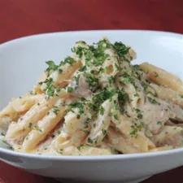

Chicken Alfredo Penne

So! You have chosen pasta! I don't blame you, pasta always sounds easy to make, but you could've chosen something more exotic, don't you think? I'm just messing with you, don't take it seriously. And to be honest, just this picture makes my mouth water. I can't wait to have a bite! However, if this doesn't sound appetizing to you or isn't fancy enough, it's ok, I understand! You can return home by pressing me! Otherwise, why don't we get started?
Let's start by having a look at the ingredients!
- 1& 1/2 chicken breast (680 g)
- 2 tablespoons butter
- ½ teaspoon dried oregano
- ½ teaspoon dried basil
- ½ teaspoon salt
- ½ teaspoon pepper
- 16 oz penne pasta (455 g), cooked
- ¼ cup fresh parsley (10 g)
Now let's take a look at the preparation!
- In a pan over medium-high heat, melt butter, then add the chicken breast.
- Season with salt, pepper, oregano, and basil. Cook 8-10 minutes or until chicken is fully cooked. Remove from heat and set chicken aside.
- In the same pan over medium heat, melt butter and add the garlic. Cook until the garlic begins to soften.
- Add half of the flour to the garlic and butter, stirring until incorporated. Then add the rest of the flour and stir.
- Pour in the milk a little bit at a time, stirring well in between, until fully incorporated and sauce begins to thicken.
- Season with salt, pepper, oregano, and basil, and stir well to incorporate.
- Add parmesan cheese and stir until melted.
- Pour the sauce (can be regular tomato sauce or make your own) over cooked penne pasta, add the chicken and mix well.
- Add parsley and extra parmesan. Mix well.
And that is how you make some tasty pasta! Perhaps you would like to try some other recipes or just get a general idea for the future? Anyways, you can return to the main page here.